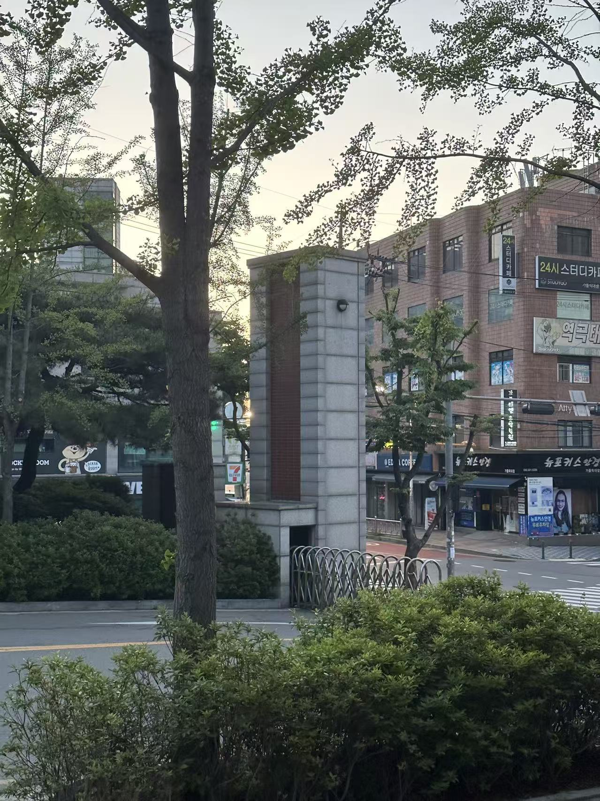

 id="kq9v3h"
<!doctype html>
<html lang="ko">
  <head>
    <meta charset="utf-8">
    <meta name="viewport" content="width=device-width, initial-scale=1">
    <title>학교정문 · 나의 핫스팟</title>
    <link rel="stylesheet" href="styles.css">
  </head>

  <body class="page-school">
    <div class="page">

      <header>
        <a href="index.html">처음으로</a>
        <h1>학교정문</h1>
        <p>학교에 들어오고 나갈 때 가장 먼저 만나는 곳</p>
      </header>

      <main>
        <section class="panel">
          <h2>이 장소를 소개합니다</h2>

          

          <p>
            여기가 학교 정문이에요.
            학생들과 교수님들이 이곳을 통해 학교에 들어오고 나갈 수 있습니다.
          </p>

          <a class="action"
             href="https://maps.app.goo.gl/9q24gAzGDKb2qGgA8"
             target="_blank">
            지도에서 위치 확인
          </a>
        </section>
      </main>

      <footer>
        <p>
          <a href="운동장.html">← 운동장</a>
          &nbsp; | &nbsp;
          <a href="식당.html">식당 →</a>
        </p>

        <p>
          <a href="index.html">처음으로 돌아가기</a>
        </p>

        <p>이 사진은 제가 직접 찍은 것입니다.</p>
        <p>정보 출처: Google</p>
      </footer>

    </div>
  </body>
</html>

